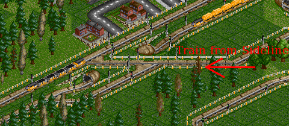

Basic Junctions
<< Sideline stations | ^^ Back to Building Guides Index | Mainline Junctions >>
In this part we build our first basic junction (in #openttdcoop we always call it "hub"). Since we always build multi-track-junctions, a junction is a bit more complicated than you may have done it before. We try to build efficient and fast railways and therefore we need efficient and fast junctions as well. For the start we will analyse a so-called Sideline Hub - or SLH for short.


We find several important things in the image above:
- A mainline (also known as "Axis") goes from south to north (you can find it quite easy, mainlines have at least two tracks in each direction). The SLH has to connect a sideline to a mainline. This is the simplest case of a hub in our games. It is usually called "T-Hub" (just lean your head right and you will notice why).
- There are no load balancers constructed for trains coming from the Sideline and entering the Mainline. The Loadbalancers will be explained later on.
- Priorities are missing on the mainline, so that trains entering the mainline slow down the trains on the mainline.
- Tunnels/ bridges are not doubled. Doubling is done based upon traffic load once a tunnel or bridge shows slowdowns for trains then it is needed to double. Unless it is a mainline or the tunnels/ bridges are longer then the distance between trains.



On the image above, you see the idea of the balancing: if a Mainline-track is used (which means: a train is on the part the Sideline-Train wants to enter) the signal state is red - and the Sideline-Train chooses the other Mainline-track. A basic priority is used to accomplish this.
But for now, let us come back to our topic - basic junctions.I know what you are thinking: "Why are they doing these weird things?". The answer is: because it is the simplest thing in the end. Make a clean and intelligent building right from the start - it saves you and others later on.
Just imagine a game with 300+ trains and 100+ stations and every station has its own connection to a mainline with high traffic. All these entering/leaving trains will slow down other trains - it's some kind of chain reaction. SLH's are intended to be fast connection points from sidelines to mainlines. Traffic from stations are bundled to sidelines and via a SLH they are bundled to a massive mainline. This - in the end - ensures a fast and comprehensive network!
Name the HUB
Every hub has a name! Not only because we are gifted writers but also because of finding all these hubs in the future. On a typical 512x512 map we end up with at least four "Backbone Hubs" (explained later on) and at least eight or even more Sideline Hubs.


Since #openttdcoop has something to deal with both communication and coordination it has proven that "Look at SLH 3" is easier to communicate rather than "Look at this hub east to the hub which is west of the eastern one". This ought to be obvious.
Things to keep in mind while constructing
- Close signaling! Always place signals as close as possible to a track split. This prevents unnecessary red-signal-times when a train passes a split.


- Think big! Our trains have a certain length (depending on the current game). If it is too long to enter a Sideline it therefore blocks not only the Sideline itself but also the Mainline. On a good junction the Sideline-entry is long enough for one whole train to wait.
- You can get from each direction to any other direction! Since we want to make our railline expandable, we don't want to rethink all the old hubs in the future. It is better to build a hub with as many features as possible right at the start rather than heaving a headache in the future.
- A clean building style! You are not at your own - and this is probably the best thing about #openttdcoop! Unfortunately, most of us can't read your mind and therefore it is best to make a clean building style everyone understands. To be more concrete: don't do unnecessary tracks, make comments (by using signs) of your ideas. Signs do not cost anything at all - except some pressed keys on your keyboard.
- Curve Radius. Depending on the game, we use a certain trainlength. Imaging a map with 3-tile-long-trains. This means: If you build curves with 3 tiles length each, the trains won't slow down! For monorail or maglev it's very important to remain at full speed. Just ask some experts around for the minimum radius for full speed-curves. Note: for larger trainlengths, the radius is always smaller than the trainlength.


- Finally, one thing is left to say: the Mainline always has the highest priority! Keep this in your mind for the next chapters!
<< Sideline stations | ^^ Back to Building Guides Index | Mainline Junctions >>
Categories: GuidesBasic networking